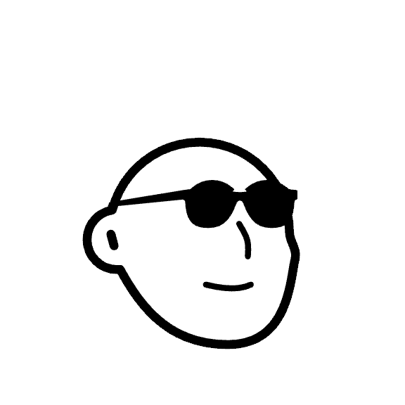
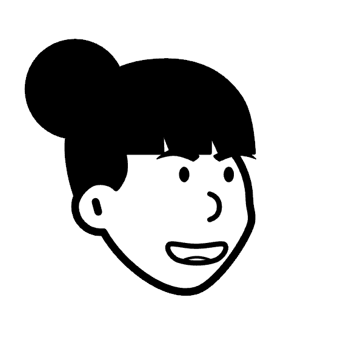

User profiles and a stacked-avatar switcher
Four demo viewers, each with a name, an avatar, a language preference and their real liked movies from movies.json. A stack of avatars in the top right switches the whole app to another viewer. i18n itself is out of scope here, so this plan only stores the language choice.
server/assets/movies.json holds 806 users (user_id 1–806, array index = id − 1), not 4. There are four avatars, so the plan makes profiles from the first four users and leaves the other 802 untouched. Which four is decision D4 below. Every liked id for users 1–4 exists in the 70-movie catalog.
1The four profiles
Names are made up. Languages cover English, Spanish and Japanese, and English appears twice because there are four people and three languages. Likes are not copied anywhere: each profile points at a dataset user_id and its likes are read from movies.json at runtime, so there is one source of truth.
| Profile | Slug | Dataset user | Language | Liked | Avatar (renamed from) |
|---|---|---|---|---|---|
 Sam Okaforlight viewer, 8 likes | sam | user_id 1 | English en | 8 | sam.png ← notion-avatar-1792211029601.png |
 Yuki Tanaka35 likes | yuki | user_id 2 | 日本語 ja | 35 | yuki.png ← …1792211024282.png |
Lucía Navarro45 likes | lucia | user_id 3 | Español es | 45 | lucia.png ← …1792211013641.png |
Dale Whitfieldheaviest viewer, 53 likes | dale | user_id 4 | English en | 53 | dale.png ← …1792211034447.png |
The avatars are 576×576 RGBA line art with a transparent background and the face sitting off-centre. On the dark theme black lines on a dark surface would vanish, so each profile also gets a pastel tint behind the image and the image is cropped with object-fit: cover plus a slight scale. The mockup below shows the result.
2The switcher, clickable
This mirrors the app bar (Vuetify v-app-bar, tokens above). Click or arrow-key between avatars. The log underneath lists what the real implementation resets on each switch.
Movies you liked
3What "clean context" means
Today the page is a pure function of the URL: useLikedMovies reads ?liked=, and useRecommendations keys its fetch on the settled picks (recommendations:20,59). The plan keeps that property by putting the active viewer in the URL too, so a switch is one navigation and nothing can be left over from the previous viewer.
Reset on every switch
- Picked movies: the URL
likedis replaced by the new viewer's likes, so edits made as the previous viewer do not leak. - Search box text and open dropdown (
MovieSearchremounts via:key="profile.id"). - The "ignored ids" warning, error and retry state of the recommendations.
- In-flight recommendation request (the debounced
settledpicks are re-seeded, not carried over). - Scroll position.
Rules for the URL
?user=missing → middleware picks the cookie's viewer, else the first profile, and redirects withuserand their likes filled in.?user=samwithoutlikedmeans "no picks" (popular fallback), not "reseed". Seeding only happens whenuseris missing, so removing the last chip never loops.- Unknown
user→ treated as missing (same graceful drop as invalidlikedids today). - A "Reset to my likes" button re-applies the profile's likes after edits.
4Implementation
| Where | Change |
|---|---|
shared/types/index.ts | Add Language = 'en' | 'es' | 'ja' and Profile { id, name, avatarUrl, tint, language, liked: number[] }. |
server/utils/profiles.ts new | The four profile definitions (slug, name, avatar, language, dataset user id). Likes come from getDataset().users[userId - 1], validated at module load (throws if a mapped id is not in the catalog). |
server/api/profiles.get.ts new | GET /api/profiles returns the four profiles with likes (about 140 ids, under 1 KB). One endpoint because the switcher needs all four at once. |
server/utils/dataset.ts | Only the comment changes: "never exposed" becomes "only the four demo profiles' likes are exposed; the other 802 users stay private". |
public/users/ | git mv the four staged notion-avatar-*.png to slug names (sam.png…). They are already staged, so this is free. |
app/composables/useProfiles.ts new | Fetches /api/profiles once (key profiles), exposes profiles, active (from route.query.user), switchTo(id), resetLikes(), and locale = the profile's language resolved against the supported list with 'en' fallback. |
app/middleware/profile.global.ts new | Implements the URL rules above; reads/writes useCookie('profile') so SSR and client agree and there is no flash of the wrong viewer. |
app/components/UserSwitcher.vue new | Radiogroup of overlapping v-avatars, roving tabindex with arrow keys, tooltip per avatar (name, language, like count), aria-checked, data-testid="user-switcher". Respects prefers-reduced-motion; on narrow screens the name label hides and the overlap tightens. |
app/components/AppShell.vue | Mount UserSwitcher in the right slot of v-app-bar, next to the theme toggle from PR #2. |
app/composables/useLikedMovies.ts | Unchanged contract. setLiked already spreads the existing query, so user survives pick edits. |
app/pages/index.vue | Wrap the page content in :key="active.id" so local component state is dropped on switch; add the reset button; scroll to top after navigation. |
i18n/locales/en.json | A few strings (switcher label, reset button, language names). No other locales yet; ja and es are stored on profiles but resolve to English until the i18n plan registers those files. |
5Tests (e2e only, per the locked plan)
| Spec | Asserts |
|---|---|
api-profiles.spec.ts | Returns exactly 4 profiles; languages ⊆ en/es/ja; each profile's likes equal that user's likes in movies.json and all exist in the catalog; no other users' data appears in the payload; avatar URLs return 200. |
user-switcher.spec.ts | Bare / lands on a viewer with their chips (count matches); clicking another avatar swaps chips and recommendations; Back returns to the previous viewer; arrow keys move the radio; cookie restores the last viewer on a bare visit; unknown ?user= falls back; removing the last chip does not reseed. |
user-context-reset.spec.ts | Type into search, remove a chip, open the dropdown as Sam, switch to Dale: search is empty, the closed dropdown stays closed, Sam's removal did not carry over, no stale cards from Sam's key are shown, no console errors. |
| existing specs | liked-movies, smoke, layout currently open bare / and expect no picks. They will open /?user=sam&liked=-style URLs or a helper that clears picks. Mechanical update, called out so it is not a surprise. |
6Risks and interactions
- Shared links now carry two params. That is intended: the recipient sees the same viewer and picks. Cost: longer URLs (Dale's 53 ids is about 150 characters).
- Movie detail page plan (
/movies/[id], card → page transition): every link and the back link must preserveuser(andliked), or navigating back would reseed. Noted in that plan's build, not changed here. - PR #2 (theme toggle) touches the same app bar. Whichever lands second resolves a small conflict in
AppShell.vue. - No security, by design. Anyone can be anyone; the cookie is only a convenience. The README should say this is a proof of concept.
- Privacy invariant relaxed on purpose. The API used to expose no per-user likes. It now exposes four fabricated profiles' likes; the 802 other users remain internal, and the contract test guards that.
- Recommender not touched. It still takes
liked: number[]. Dataset users 1–4 are also training data for the model, so these viewers' own likes are in the co-occurrence counts. That slightly flatters their recommendations; the leave-one-out eval is unaffected.
7Decided
URL ?user= plus cookie memory
State stays a pure function of the URL; the cookie only picks who a bare "/" shows.
Edits are session-only
Profiles are read-only; "Reset to my likes" restores them.
First visit starts as Sam
No guest mode; the app always has a viewer.
Dataset users 1 to 4
Spread of 8 to 53 likes. Names and language mapping as in section 1.
No open questions remain. Awaiting an explicit go-ahead before any code is written.